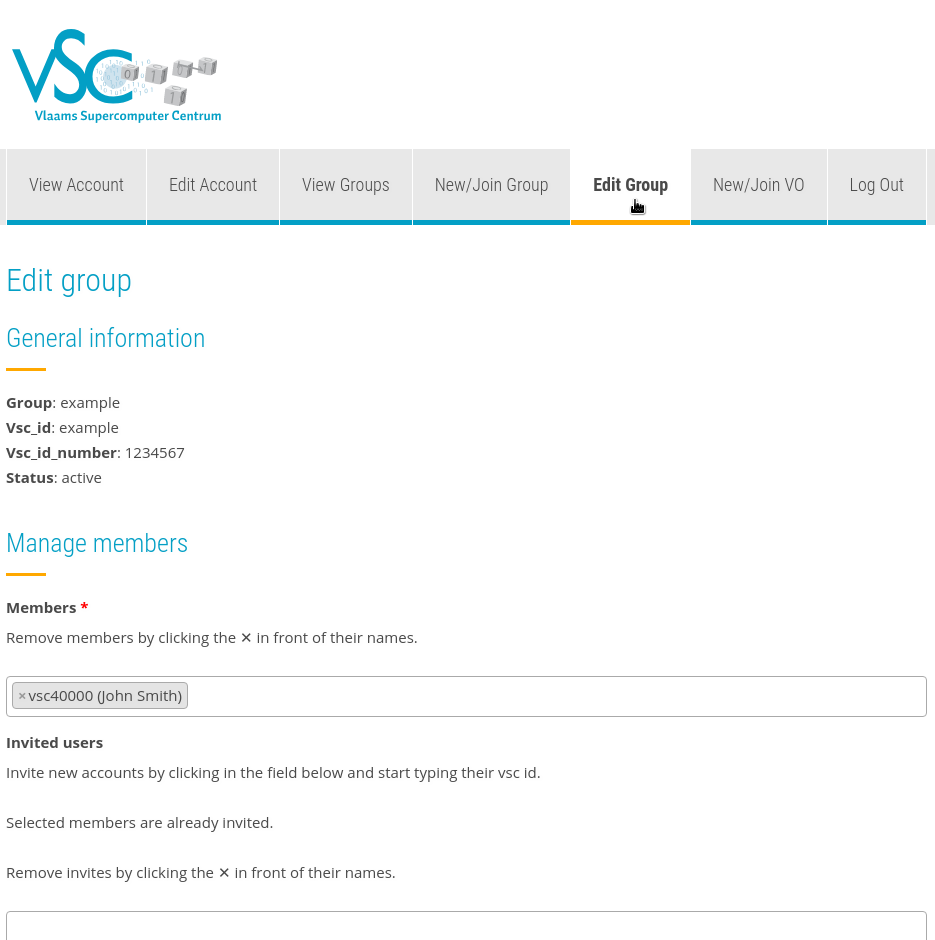

Running jobs with input/output data#
You have now learned how to start a batch job and how to start an interactive session. The next question is how to deal with input and output files, where your standard output and error messages will go to and where that you can collect your results.
The current directory and output and error files#
Default file names#
First go to the directory:
cd ~/examples/Running_jobs_with_input_output_data
Note
If the example directory is not yet present, copy it to your home directory:
cp -r /apps/antwerpen/tutorials/Intro-HPC/examples ~/
List and check the contents with:
$ ls -l
total 2304
-rwxrwxr-x 1 vsc20167 682 Sep 13 11:34 file1.py
-rw-rw-r-- 1 vsc20167 212 Sep 13 11:54 file1a.pbs
-rw-rw-r-- 1 vsc20167 994 Sep 13 11:53 file1b.pbs
-rw-rw-r-- 1 vsc20167 994 Sep 13 11:53 file1c.pbs
-rw-r--r-- 1 vsc20167 1393 Sep 13 10:41 file2.pbs
-rwxrwxr-x 1 vsc20167 2393 Sep 13 10:40 file2.py
-rw-r--r-- 1 vsc20167 1393 Sep 13 10:41 file3.pbs
-rwxrwxr-x 1 vsc20167 2393 Sep 13 10:40 file3.py
Now, let us inspect the contents of the first executable (which is just a Python script with execute permission).
#!/usr/bin/env python
#
# VSC : Flemish Supercomputing Centre
# Tutorial : Introduction to HPC
# Description: Writing to the current directory, stdout and stderr
#
import sys
# Step #1: write to a local file in your current directory
local_f = open("Hello.txt", 'w+')
local_f.write("Hello World!\n")
local_f.write("I am writing in the file:<Hello.txt>.\n")
local_f.write("in the current directory.\n")
local_f.write("Cheers!\n")
local_f.close()
# Step #2: Write to stdout
sys.stdout.write("Hello World!\n")
sys.stdout.write("I am writing to <stdout>.\n")
sys.stdout.write("Cheers!\n")
# Step #3: Write to stderr
sys.stderr.write("Hello World!\n")
sys.stderr.write("This is NO ERROR or WARNING.\n")
sys.stderr.write("I am just writing to <stderr>.\n")
sys.stderr.write("Cheers!\n")
The code of the Python script, is self explanatory:
-
In step 1, we write something to the file
hello.txtin the current directory. -
In step 2, we write some text to stdout.
-
In step 3, we write to stderr.
Check the contents of the first job script:
#!/bin/bash
#PBS -l walltime=00:05:00
# go to the (current) working directory (optional, if this is the
# directory where you submitted the job)
cd $PBS_O_WORKDIR
# the program itself
echo Start Job
date
./file1.py
echo End Job
You'll see that there are NO specific PBS directives for the placement of the output files. All output files are just written to the standard paths.
Submit it:
qsub file1a.pbs
After the job has finished, inspect the local directory again, i.e., the directory where you executed the qsub command:
$ ls -l
total 3072
-rw-rw-r-- 1 vsc20167 90 Sep 13 13:13 Hello.txt
-rwxrwxr-x 1 vsc20167 693 Sep 13 13:03 file1.py*
-rw-rw-r-- 1 vsc20167 229 Sep 13 13:01 file1a.pbs
-rw------- 1 vsc20167 91 Sep 13 13:13 file1a.pbs.e433253.leibniz
-rw------- 1 vsc20167 105 Sep 13 13:13 file1a.pbs.o433253.leibniz
-rw-rw-r-- 1 vsc20167 143 Sep 13 13:07 file1b.pbs
-rw-rw-r-- 1 vsc20167 177 Sep 13 13:06 file1c.pbs
-rw-r--r-- 1 vsc20167 1393 Sep 13 10:41 file2.pbs
-rwxrwxr-x 1 vsc20167 2393 Sep 13 10:40 file2.py*
-rw-r--r-- 1 vsc20167 1393 Sep 13 10:41 file3.pbs
-rwxrwxr-x 1 vsc20167 2393 Sep 13 10:40 file3.py*
Some observations:
-
The file
Hello.txtwas created in the current directory. -
The file
file1a.pbs.o433253.leibnizcontains all the text that was written to the standard output stream ("stdout"). -
The file
file1a.pbs.e433253.leibnizcontains all the text that was written to the standard error stream ("stderr").
Inspect their contents ... and remove the files
$ cat Hello.txt
$ cat file1a.pbs.o433253.leibniz
$ cat file1a.pbs.e433253.leibniz
$ rm Hello.txt file1a.pbs.o433253.leibniz file1a.pbs.e433253.leibniz
Tip
Type cat H and press the Tab button (looks like Tab), and it will expand into
cat Hello.txt.
Filenames using the name of the job#
Check the contents of the job script and execute it.
#!/bin/bash
# Specify the "name" of the job
#PBS -N my_serial_job
cd $PBS_O_WORKDIR
echo Start Job
date
./file1.py
echo End Job
Inspect the contents again ... and remove the generated files:
$ ls
Hello.txt file1a.pbs file1c.pbs file2.pbs file3.pbs my_serial_job.e433253.leibniz
file1.py* file1b.pbs file2.py* file3.py* my_serial_job.o433253.leibniz
$ rm Hello.txt my_serial_job.*
Here, the option "-N" was used to explicitly assign a name to the job.
This overwrote the JOBNAME variable, and resulted in a different name
for the stdout and stderr files. This name is also shown in the
second column of the "qstat" command. If no name is provided, it
defaults to the name of the job script.
User-defined file names#
You can also specify the name of stdout and stderr files explicitly by adding two lines in the job script, as in our third example:
#!/bin/bash
# redirect standard output (-o) and error (-e)
#PBS -o stdout.$PBS_JOBID
#PBS -e stderr.$PBS_JOBID
cd $PBS_O_WORKDIR
echo Start Job
date
./file1.py
echo End Job
Where to store your data on the HPC#
The UAntwerpen-HPC cluster offers their users several locations to store their data. Most of the data will reside on the shared storage system, but all compute nodes also have their own (small) local disk.
Pre-defined user directories#
Three different pre-defined user directories are available, where each directory has been created for different purposes. The best place to store your data depends on the purpose, but also the size and type of usage of the data.
The following locations are available:
| Variable | Description |
|---|---|
| Long-term storage slow filesystem, intended for smaller files | |
$VSC_HOME |
For your configuration files and other small files, see the section on your home directory. The default directory is user/Antwerpen/xxx/vsc20167. The same file system is accessible from all sites, i.e., you'll see the same contents in $VSC_HOME on all sites. |
$VSC_DATA |
A bigger "workspace", for datasets, results, logfiles, etc. see the section on your data directory. The default directory is data/Antwerpen/xxx/vsc20167. The same file system is accessible from all sites. |
| Fast temporary storage | |
$VSC_SCRATCH_NODE |
For temporary or transient data on the local compute node, where fast access is important; see the section on your scratch space. This space is available per node. The default directory is /tmp. On different nodes, you'll see different content. |
$VSC_SCRATCH |
For temporary or transient data that has to be accessible from all nodes of a cluster (including the login nodes). The default directory is scratch/Antwerpen/xxx/vsc20167. This directory is cluster- or site-specific: On different sites, and sometimes on different clusters on the same site, you'll get a different directory with different content. |
$VSC_SCRATCH_SITE |
Currently the same as $VSC_SCRATCH, but could be used for a scratch space shared across all clusters at a site in the future. See the section on your scratch space. |
$VSC_SCRATCH_GLOBAL |
Currently the same as $VSC_SCRATCH, but could be used for a scratch space shared across all clusters of the VSC in the future. See the section on your scratch space. |
Since these directories are not necessarily mounted on the same locations over all sites, you should always (try to) use the environment variables that have been created.
We elaborate more on the specific function of these locations in the following sections.
Your home directory ($VSC_HOME)#
Your home directory is where you arrive by default when you login to the cluster. Your shell refers to it as "~" (tilde), and its absolute path is also stored in the environment variable $VSC_HOME. Your home directory is shared across all clusters of the VSC.
The data stored here should be relatively small (e.g., no files or directories larger than a few megabytes), and preferably should only contain configuration files. Note that various kinds of configuration files are also stored here, e.g., by MATLAB, Eclipse, ...
The operating system also creates a few files and folders here to manage your account. Examples are:
| File or Directory | Description |
|---|---|
| .ssh/ | This directory contains some files necessary for you to login to the cluster and to submit jobs on the cluster. Do not remove them, and do not alter anything if you don't know what you are doing! |
| .bash_profile | When you login (type username and password) remotely via ssh, .bash_profile is executed to configure your shell before the initial command prompt. |
| .bashrc | This script is executed every time you start a session on the cluster: when you login to the cluster and when a job starts. |
| .bash_history | This file contains the commands you typed at your shell prompt, in case you need them again. |
Furthermore, we have initially created some files/directories there (tutorial, docs, examples, examples.pbs) that accompany this manual and allow you to easily execute the provided examples.
Your data directory ($VSC_DATA)#
In this directory you can store all other data that you need for longer terms (such as the results of previous jobs, ...). It is a good place for, e.g., storing big files like genome data.
The environment variable pointing to this directory is $VSC_DATA. This volume is shared across all clusters of the VSC. There are however no guarantees about the speed you will achieve on this volume. For guaranteed fast performance and very heavy I/O, you should use the scratch space instead.
Your scratch space ($VSC_SCRATCH)#
To enable quick writing from your job, a few extra file systems are available on the compute nodes. These extra file systems are called scratch folders, and can be used for storage of temporary and/or transient data (temporary results, anything you just need during your job, or your batch of jobs).
You should remove any data from these systems after your processing them has finished. There are no guarantees about the time your data will be stored on this system, and we plan to clean these automatically on a regular basis. The maximum allowed age of files on these scratch file systems depends on the type of scratch, and can be anywhere between a day and a few weeks. We don't guarantee that these policies remain forever, and may change them if this seems necessary for the healthy operation of the cluster.
Each type of scratch has its own use:
Node scratch ($VSC_SCRATCH_NODE). Every node has its own scratch space, which is completely separated from the other nodes. On some clusters, it will be on a local disk in the node, while on other clusters it will be emulated through another file server. Some drawbacks are that the storage can only be accessed on that particular node and that the capacity is often very limited (e.g., 100 GB). The performance will depend a lot on the particular implementation in the cluster. In many cases, it will be significantly slower than the cluster scratch as it typically consists of just a single disk. However, if that disk is local to the node (as on most clusters), the performance will not depend on what others are doing on the cluster.
Cluster scratch ($VSC_SCRATCH). To allow a job running on multiple nodes (or multiple jobs running on separate nodes) to share data as files, every node of the cluster (including the login nodes) has access to this shared scratch directory. Just like the home and data directories, every user has its own scratch directory. Because this scratch is also available from the login nodes, you could manually copy results to your data directory after your job has ended. Also, this type of scratch is usually implemented by running tens or hundreds of disks in parallel on a powerful file server with fast connection to all the cluster nodes and therefore is often the fastest file system available on a cluster. You may not get the same file system on different clusters, i.e., you may see different content on different clusters at the same institute.
At the time of writing, the cluster scratch space is
shared between both clusters at the University of Antwerp. This may change again in the future when storage gets updated.
Site scratch ($VSC_SCRATCH_SITE). At the time of writing, the site scratch is just the same volume as the cluster scratch, and thus contains the same data. In the future it may point to a different scratch file system that is available across all clusters at a particular site, which is in fact the case for the cluster scratch on some sites.
Global scratch ($VSC_SCRATCH_GLOBAL). At the time of writing, the global scratch is just the same volume as the cluster scratch, and thus contains the same data. In the future it may point to a scratch file system that is available across all clusters of the VSC, but at the moment of writing there are no plans to provide this.
Pre-defined quotas#
Quota is enabled on these directories, which means that the amount of data you can store there is limited. This holds for both the total size of all files as well as the total number of files that can be stored. The system works with a soft quota and a hard quota. You can temporarily exceed the soft quota, but you can never exceed the hard quota. The user will get warnings as soon as he exceeds the soft quota.
The amount of data (called "Block Limits") that is currently in use by the user ("KB"), the soft limits ("quota") and the hard limits ("limit") for all 3 file-systems are always displayed when a user connects to the .
With regards to the file limits, the number of files in use ("files"), its soft limit ("quota") and its hard limit ("limit") for the 3 file-systems are also displayed.
::: prompt ---------------------------------------------------------- Your quota is:
Block Limits Filesystem KB quota limit grace home 177920 3145728 3461120 none data 17707776 26214400 28835840 none scratch 371520 26214400 28835840 none
File Limits Filesystem files quota limit grace home 671 20000 25000 none data 103079 100000 150000 expired scratch 2214 100000 150000 none
:::
Make sure to regularly check these numbers at log-in!
The rules are:
-
You will only receive a warning when you have reached the soft limit of either quota.
-
You will start losing data and get I/O errors when you reach the hard limit. In this case, data loss will occur since nothing can be written anymore (this holds both for new files as well as for existing files), until you free up some space by removing some files. Also note that you will not be warned when data loss occurs, so keep an eye open for the general quota warnings!
-
The same holds for running jobs that need to write files: when you reach your hard quota, jobs will crash.
We do realise that quota are often observed as a nuisance by users, especially if you're running low on it. However, it is an essential feature of a shared infrastructure. Quota ensure that a single user cannot accidentally take a cluster down (and break other user's jobs) by filling up the available disk space. And they help to guarantee a fair use of all available resources for all users. Quota also help to ensure that each folder is used for its intended purpose.
Writing Output files#
Tip
Find the code of the exercises in "~/examples/Running_jobs_with_input_output_data"
In the next exercise, you will generate a file in the $VSC_SCRATCH directory. In order to generate some CPU- and disk-I/O load, we will
-
take a random integer between 1 and 2000 and calculate all primes up to that limit;
-
repeat this action 30.000 times;
-
write the output to the "
primes_1.txt" output file in the $VSC_SCRATCH-directory.
Check the Python and the PBS file, and submit the job: Remember that this is already a more serious (disk-I/O and computational intensive) job, which takes approximately 3 minutes on the UAntwerpen-HPC.
$ cat file2.py
$ cat file2.pbs
$ qsub file2.pbs
$ qstat
$ ls -l
$ echo $VSC_SCRATCH
$ ls -l $VSC_SCRATCH
$ more $VSC_SCRATCH/primes_1.txt
Reading Input files#
Tip
Find the code of the exercise "file3.py" in "~/examples/Running_jobs_with_input_output_data".
In this exercise, you will
-
Generate the file "
primes_1.txt" again as in the previous exercise; -
open the file;
-
read it line by line;
-
calculate the average of primes in the line;
-
count the number of primes found per line;
-
write it to the "
primes_2.txt" output file in the $VSC_SCRATCH-directory.
Check the Python and the PBS file, and submit the job:
$ cat file3.py
$ cat file3.pbs
$ qsub file3.pbs
$ qstat
$ ls -l
$ more $VSC_SCRATCH/primes_2.txt
How much disk space do I get?#
Quota#
The available disk space on the UAntwerpen-HPC is limited. The actual disk capacity, shared by all users, can be found on the "Available hardware" page on the website. (https://vscdocumentation.readthedocs.io/en/latest/hardware.html) As explained in the section on predefined quota, this implies that there are also limits to:
-
the amount of disk space; and
-
the number of files
that can be made available to each individual UAntwerpen-HPC user.
The quota of disk space and number of files for each UAntwerpen-HPC user is:
HOME 3 GB 20000 DATA 25 GB 100000 SCRATCH 25 GB 100000
Tip
The first action to take when you have exceeded your quota is to clean up your directories. You could start by removing intermediate, temporary or log files. Keeping your environment clean will never do any harm.
Tip
Check your quota#
The "show_quota" command has been developed to show you the status of
your quota in a readable format:
$ show_quota
VSC_DATA: used 81MB (0%) quota 25600MB
VSC_HOME: used 33MB (1%) quota 3072MB
VSC_SCRATCH: used 28MB (0%) quota 25600MB
VSC_SCRATCH_GLOBAL: used 28MB (0%) quota 25600MB
VSC_SCRATCH_SITE: used 28MB (0%) quota 25600MB
or on the UAntwerp clusters
$ module load scripts
$ show_quota
VSC_DATA: used 81MB (0%) quota 25600MB
VSC_HOME: used 33MB (1%) quota 3072MB
VSC_SCRATCH: used 28MB (0%) quota 25600MB
VSC_SCRATCH_GLOBAL: used 28MB (0%) quota 25600MB
VSC_SCRATCH_SITE: used 28MB (0%) quota 25600MB
With this command, you can follow up the consumption of your total disk quota easily, as it is expressed in percentages. Depending of on which cluster you are running the script, it may not be able to show the quota on all your folders. E.g., when running on the tier-1 system Muk, the script will not be able to show the quota on $VSC_HOME or $VSC_DATA if your account is a KU Leuven, UAntwerpen or VUB account.
Once your quota is (nearly) exhausted, you will want to know which
directories are responsible for the consumption of your disk space. You
can check the size of all subdirectories in the current directory with
the "du" (Disk Usage) command:
$ du
256 ./ex01-matlab/log
1536 ./ex01-matlab
768 ./ex04-python
512 ./ex02-python
768 ./ex03-python
5632
This shows you first the aggregated size of all subdirectories, and finally the total size of the current directory "." (this includes files stored in the current directory).
If you also want this size to be "human-readable" (and not always the total number of kilobytes), you add the parameter "-h":
$ du -h
256K ./ex01-matlab/log
1.5M ./ex01-matlab
768K ./ex04-python
512K ./ex02-python
768K ./ex03-python
5.5M .
If the number of lower level subdirectories starts to grow too big, you may not want to see the information at that depth; you could just ask for a summary of the current directory:
$ du -s
5632 .
$ du -s -h
If you want to see the size of any file or top-level subdirectory in the current directory, you could use the following command:
$ du -h --max-depth 1
1.5M ./ex01-matlab
512K ./ex02-python
768K ./ex03-python
768K ./ex04-python
256K ./example.sh
1.5M ./intro-HPC.pdf
700M ./.cache
Finally, if you don't want to know the size of the data in your current directory, but in some other directory (e.g., your data directory), you just pass this directory as a parameter. The command below will show the disk use in your home directory, even if you are currently in a different directory:
$ du -h --max-depth 1 $VSC_HOME
22M /user/antwerpen/201/vsc20167/dataset01
36M /user/antwerpen/201/vsc20167/dataset02
22M /user/antwerpen/201/vsc20167/dataset03
3.5M /user/antwerpen/201/vsc20167/primes.txt
24M /user/antwerpen/201/vsc20167/.cache
We also want to mention the tree command, as it also provides an easy
manner to see which files consumed your available quotas. Tree is a
recursive directory-listing program that produces a depth indented
listing of files.
Try:
$ tree -s -d
However, we urge you to only use the du and tree commands when you
really need them as they can put a heavy strain on the file system and
thus slow down file operations on the cluster for all other users.
Groups#
Groups are a way to manage who can access what data. A user can belong to multiple groups at a time. Groups can be created and managed without any interaction from the system administrators.
Please note that changes are not instantaneous: it may take about an hour for the changes to propagate throughout the entire HPC infrastructure.
To change the group of a directory and it's underlying directories and files, you can use:
chgrp -R groupname directory
Joining an existing group#
-
Get the group name you want to belong to.
-
Go to https://account.vscentrum.be/django/group/new and fill in the section named "Join group". You will be asked to fill in the group name and a message for the moderator of the group, where you identify yourself. This should look something like in the image below.
-
After clicking the submit button, a message will be sent to the moderator of the group, who will either approve or deny the request. You will be a member of the group shortly after the group moderator approves your request.

Creating a new group#
-
Go to https://account.vscentrum.be/django/group/new and scroll down to the section "Request new group". This should look something like in the image below.
-
Fill out the group name. This cannot contain spaces.
-
Put a description of your group in the "Info" field.
-
You will now be a member and moderator of your newly created group.

Managing a group#
Group moderators can go to https://account.vscentrum.be/django/group/edit to manage their group (see the image below). Moderators can invite and remove members. They can also promote other members to moderator and remove other moderators.

Inspecting groups#
You can get details about the current state of groups on the HPC
infrastructure with the following command (example is the name of the
group we want to inspect):
$ getent group example
example:*:1234567:vsc40001,vsc40002,vsc40003
We can see that the VSC id number is 1234567 and that there are three
members in the group: vsc40001, vsc40002 and vsc40003.